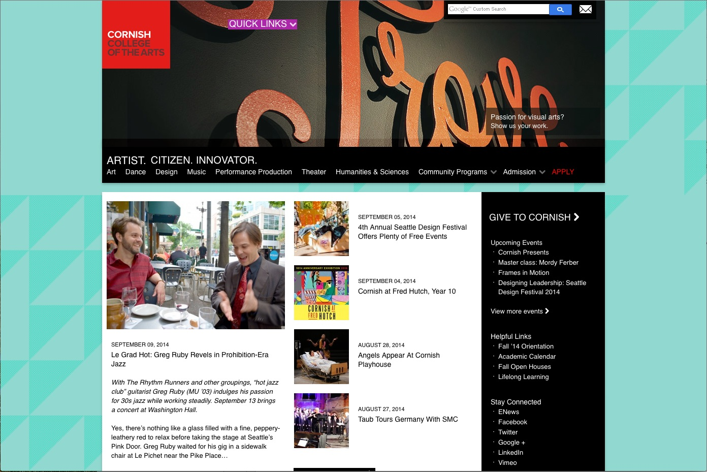
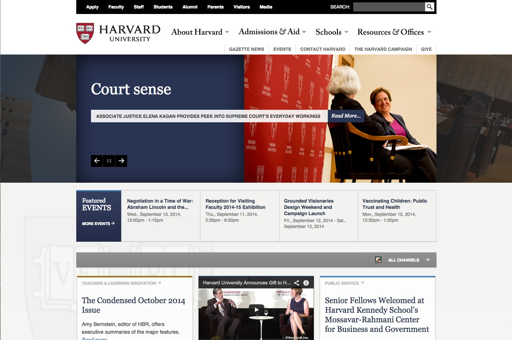

Bad vs Good Websites
I have found Bad vs good websites and I would like to tell you about some of them here.
Bad Website

I picked Cornish website as a worst; not only because I want Cornish to change our website with more clean and appealing visualized designs,
but I also thought Cornish website could be confusing for non-students or first visitors.
It's not well organized by dividing departments from first page when it could be more appealing if there was one more step before so visitors
can get more access to informations about school or staffs and have their questions answered before they find their ways to figure out which
department they should get into.
Academic calendar is hard to find (also including other informations) since all the texts are white on black background.
Two different logos seems unnecessary.
Texts are all over the page and not organized(ex."This is Your Place" should be more appealing since it links to admission page).
Too much colors makes everything confusing.
Some Image above are not relate to categories.
Compass is hard to find.
Good Website

I wanted to find websites that I could compare, so I thought Harvard University website was good example of well organized one to compare
since it’s well organized with clean visual aspects.
Front page seems to be more organized and gives broad choices for informations.
Important informations such as, apply, staff, visitors, students etc. follows every pages
so that visitors could get access right ways as they needed.
By not using overused colors, nothing distracts from finding informations.
Faster image slides and given manual access to slide images are more simple. Also the way how they used image slides as another links
to categories are smart and fun to look for.
How school news are placing in bottom space and shows more interesting educational informations instead give more interesting and easy access
for visitors to helps to get eyes set fast towards informations.
The way how they have school including in first categories to access to next level keeps this website more clean and organized.
Different type faces for different categories helps to set eyes fast towards informations.
Click here for images!